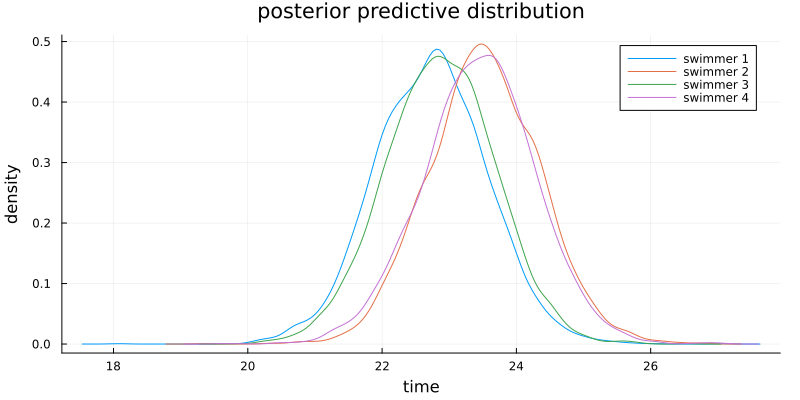

Exercise 9.1 Solution - Hoff, A First Course in Bayesian Statistical Methods
標準ベイズ統計学 演習問題 9.1 解答例
a)
Answer
The prior information means that the line \(\beta_1 + \beta_2 x\) should produce values between 22 and 24 when \(x\) is between 1 and 6. A little algebra shows that we need a prior distribution on \((\beta_1, \beta_2)\) such that \(\frac{98}{5} < \beta_1 < \frac{132}{5}\) and \(-\frac{2}{5} < \beta_2 < \frac{2}{5}\) with high probability. This could be done by taking \(\boldsymbol{\beta}_0 = (23, 0) \) and \(\Sigma_0 = \text{diag}\left( \left(\frac{17}{5} \right)^2, \left(\frac{1}{5} \right)^2 \right)\). For \(\nu_0\) and \(\sigma_0^2\), we could take \(\nu_0 = 2\) and \(\sigma_0^2 = 0.5\) so that the prior distribution of \(\sigma^2\) is concentrated around 0.5.
# read data swim = readdlm("../../Exercises/swim.dat", header=false) function regressionSemiconjugatePrior(y, X, β₀, Σ₀, ν₀, σ₀²; S=5000) n, p = size(X) BETA = Matrix{Float64}(undef, S, p) SIGMA² = Vector{Float64}(undef, S) # starting values olsfit = lm(X, y) β = coef(olsfit) σ² = sum(map(x -> x^2, residuals(olsfit))) / (n - p) # MCMC algorithm for s in 1:S # update β V = inv(inv(Σ₀) + X'X / σ²) E = V * (inv(Σ₀) * β₀ + X'y / σ²) β = rand(MvNormal(E, Symmetric(V))) # update σ² νₙ = ν₀ + n SSR = sum(map(x -> x^2, y - X*β)) νₙσ²ₙ = ν₀ * σ₀² + SSR σ² = rand(InverseGamma(νₙ / 2, 2/νₙσ²ₙ)) # store BETA[s, :] = β SIGMA²[s] = σ² end return BETA, SIGMA² end # set prior parameters β₀ = [23, 0] Σ₀ = diagm([(17/5)^2, (1/5)^2]) ν₀ = 2 σ₀² = 0.5 S = 5000 Y_PRED = Matrix{Float64}(undef, S, size(swim,1)) fig = plot( title="posterior predictive distribution", xlabel="time", ylabel="density" , size=(800, 400), margin=3mm ) for i in 1:size(swim,1) y = swim[i, :] X = [repeat([1], length(y)) 1:length(y)] BETA, SIGMA² = regressionSemiconjugatePrior(y, X, β₀, Σ₀, ν₀, σ₀², S=S) μ_ypred = BETA[:,1] .+ BETA[:,2] * (length(y)+1) ypred = rand.(Normal.(μ_ypred, sqrt.(SIGMA²))) Y_PRED[:, i] = ypred fig = density!(fig, ypred, label="swimmer $i") ypred_mean = ypred |> mean |> x -> round(x, digits=2) println("swimmer $i: ", ypred_mean) end
:RESULTS:
swimmer 1: 22.73 swimmer 2: 23.52 swimmer 3: 22.86 swimmer 4: 23.44

b)
Answer
ind_fastest = mapslices(x -> x .== minimum(x), Y_PRED, dims=2) mean(ind_fastest, dims=1)
:RESULTS:
1×4 Matrix{Float64}:
0.4184 0.1064 0.3504 0.1248
The probability that each swimmer is the fastest is shown above. Swimmer 1 will be the fastest with probability 0.4184, so I recommend that the coach choose swimmer 1.